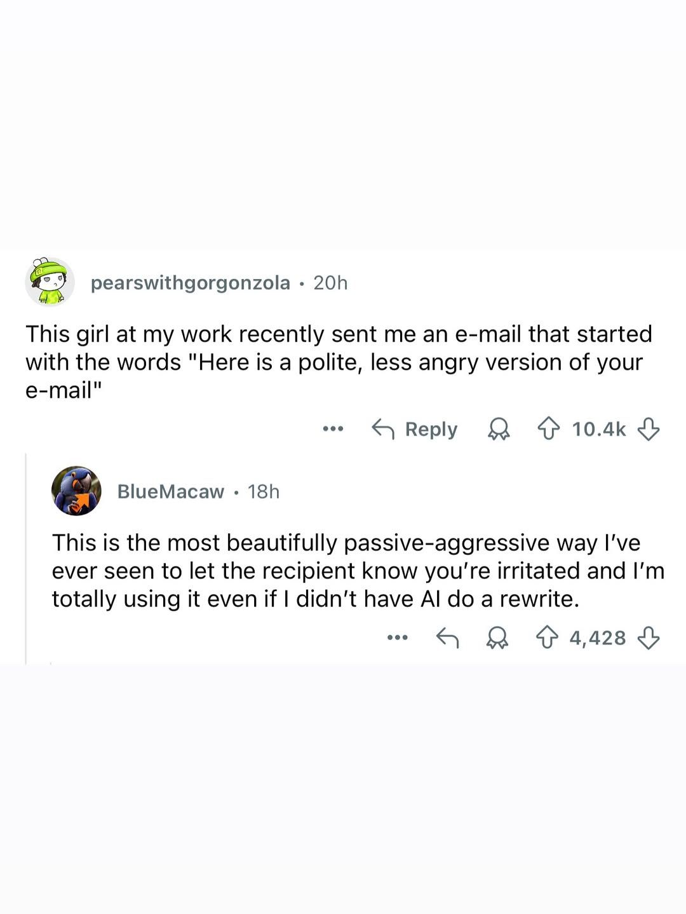

בוודאי, הנה גרסה מעודכנת לפי ההנחיות שלך:
פורסם במקור ב LinkedIn
בוודאי, הנה גרסה מעודכנת לפי ההנחיות שלך:
גם לי זה קרה - אני מודה.
פרסמתי פוסט ושכחתי למחוק את המשפט שהסגיר שהשתמשתי בצ׳אט כדי לנסח. או שהופיע בו מקף שנראה חשוד – כי רק הצ׳אט משתמש בו.
זאת המציאות החדשה - אנחנו משתמשים בכלים כמו GPT כדי לנסח טוב יותר, לכתוב ברור יותר, ולפעמים גם להרגיש יותר.
מה אתם חושבים, עד כמה זה מפריע לכם ואיפה עובר הגבול בין ניסוח אישי לרובוטי? 🤖
